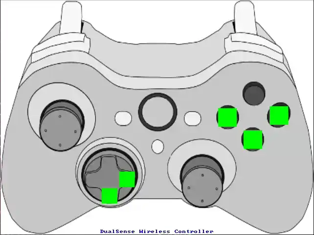
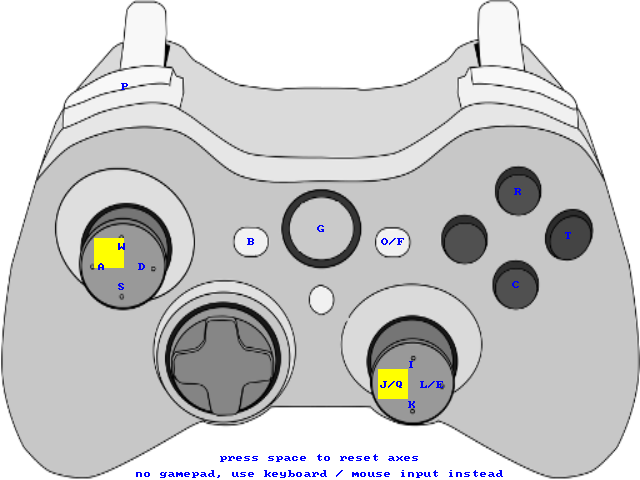

快速入门
环境要求
Ubuntu 20.04+
ROS Noetic
C++17
依赖安装
bash ./scripts/install_third_party.sh
该脚本会统一安装当前仓库通依赖的第三方库，包括 OpenVINO、Drake、
Eigen3、yaml-cpp、Protobuf、GLFW、LCM、gflags、
libusb、modbus 等，并自动写入 Drake / OpenVINO 所需环境变量。
编译
# 克隆仓库
git clone https://gitee.com/leju-robot/lejulab.git
# 编译
cd lejulab
catkin build
Docker 运行
如果希望直接在容器中运行仿真，可以使用仓库自带的 Docker 脚本。普通模式和 GPU 模式二选一使用：
# 普通模式
./docker/run.sh
# GPU 模式
./docker/run_with_gpu.sh
首次运行时，脚本会自动下载基础镜像并构建本地
lejulab镜像在普通模式和 GPU 模式之间切换时，按提示删除旧容器后再启动另一种模式
如果主机还没有配置好 NVIDIA Docker 环境，
./docker/run_with_gpu.sh会给出提示并协助完成配置
使用两个终端启动仿真：
终端 1：
./docker/run.sh
# 或 ./docker/run_with_gpu.sh
# 使用共享内存版 CycloneDDS 配置
./src/leju_launch/scripts/start_roudi.sh
终端 2：
./docker/run.sh
# 或 ./docker/run_with_gpu.sh
catkin build
# Docker 中默认配置 zsh
source devel/setup.zsh
roslaunch leju_launch load_mujoco_sim.launch
在 Docker 中运行时，不需要执行 ./src/leju_launch/scripts/setup_cyclonedds_config.sh。
部署 iceoryx 共享内存（首次使用需执行）
项目支持通过 iceoryx 共享内存加速进程间通信，建议部署以获得更优的实时性能：
./src/leju_launch/scripts/setup_cyclonedds_config.sh
部署脚本会完成以下操作：
安装 RouDi 守护进程为系统服务（开机自启）
部署 CycloneDDS 配置文件到
/etc/cyclonedds/设置
CYCLONEDDS_URI环境变量默认为cyclonedds_shm.xml
警告
部署完成后需要 注销当前用户重新登录 或 重启系统 才能生效。
卸载共享内存支持（还原为普通网络通信）：
./src/leju_launch/scripts/setup_cyclonedds_config.sh --remove
基本使用
启动前需设置机器人版本并加载工作空间，再选择启动 实物 或 仿真。
1. 设置机器人版本（必选）
通过环境变量 ROBOT_VERSION 指定当前机型，取值与 RobotVersions（Kuavo / Roban 系列） 对应，例如：
Kuavo 系列：
45（4.5 PRO 灵巧手）、46（4.6 UAE）、47（4.7 夹爪）、42（4.2 基础版）、50（5.0 基础版）等，详见 Kuavo 系列。Roban 系列：
14（2 代基础版）等，详见 Roban 系列。
export ROBOT_VERSION=46 # 示例：Kuavo 4.6 UAE
2. 加载工作空间（必选）
cd lejulab_platform
source devel/setup.bash
3. 启动实物
roslaunch leju_launch load_real.launch
4. 启动仿真（MuJoCo）
roslaunch leju_launch load_mujoco_sim.launch
Quest3 VR 控制快速上手
Quest3 VR 控制面向 Kuavo4Pro(46) 与 Kuavo5(52)。当前 Roban(14) 不开放
leju-vr-control 节点。
机型 |
手臂控制 |
头部控制 |
速度控制 |
腰部控制 |
备注 |
|---|---|---|---|---|---|
|
支持 |
支持 |
支持 |
不支持 |
无腰部自由度 |
|
支持 |
支持 |
支持 |
支持 |
左手 |
|
不开放 |
不开放 |
不开放 |
不开放 |
当前节点启动即退出 |
启动方式：
sudo su # 实物需要 root 权限
source devel/setup.bash
# kuavo5
export ROBOT_VERSION=52
roslaunch leju_launch vr_teleop.launch
# kuavo4pro
export ROBOT_VERSION=46
roslaunch leju_launch vr_teleop.launch
如需手动指定 Quest3 的 IP，可追加：
roslaunch leju_launch vr_teleop.launch quest_ip:=192.168.1.100
手臂模式切换：
模式 |
值 |
效果 |
|---|---|---|
|
|
保持当前手臂姿态，适合临时停在当前位置 |
|
|
交还给默认自动行为，手臂不再接受当前 VR 增量控制 |
|
|
进入 VR 外部控制模式，按住对应 |
常用操作：
X+A：在Auto(1)与External(2)之间切换X+B：在KeepPose(0)与External(2)之间切换X+Y：进入安全停机/关节松弛状态左/右
grip：对应手臂进入增量控制头部：由头显姿态驱动
左摇杆：发布原始范围
[-1, 1]的平移速度指令，上推前进、下拉后退、左推左移、右推右移右摇杆：发布原始范围
[-1, 1]的旋转速度指令，左推左转、右推右转
Kuavo5(52) 额外支持腰部手柄控制：
左手只触摸
Y右摇杆左右绝对控制腰部 yaw
触摸
Y时 walking 被禁用松开
Y后腰部回零
遥控器操作
leju-joystick 提供手柄/遥控器输入：插入实体手柄时可可视化手柄状态；未插入手柄时可用键盘和鼠标模拟手柄输入。不论哪种方式，都会将手柄数据通过 LejuSDK 以 JoyData 类型发布到 DDS，控制器可通过 subscribeJoyData() 订阅。
插入手柄时，界面会显示当前手柄状态（按键与摇杆实时反馈），例如：

未插入手柄时，可用键盘和鼠标模拟手柄输入，界面示意如下：

键盘映射（无手柄时）
摇杆轴 （对应 JoyData.axes）
键盘 |
映射 |
说明 |
|---|---|---|
W / S |
左摇杆 Y |
左摇杆上下（W 负向，S 正向） |
A / D |
左摇杆 X |
左摇杆左右（A 负向，D 正向） |
I / K |
右摇杆 Y |
右摇杆上下（I 负向，K 正向） |
J / Q / L / E |
右摇杆 X |
J 或 Q 负向，L 或 E 正向 |
Space |
重置 |
所有摇杆与扳机归零 |
按钮 （对应 JoyData.buttons）
键盘 |
映射 |
说明 |
|---|---|---|
C |
south |
底部面键 (Xbox A / PS Cross) |
T |
east |
右侧面键 (Xbox B / PS Circle) |
R |
north |
顶部面键 (Xbox Y / PS Triangle) |
B |
back |
返回键 (Xbox Back / PS Select) |
G |
guide |
指南键 (Xbox 按钮 / PS 按钮) |
O / F |
start |
开始键 (Xbox Start / PS Start) |
P |
left_shoulder |
左肩键 (LB / L1) |
鼠标：界面上的按钮可用鼠标左键点击，摇杆区域可用鼠标拖拽；效果与键盘映射一致。